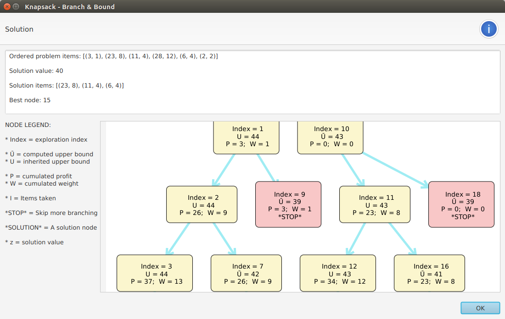
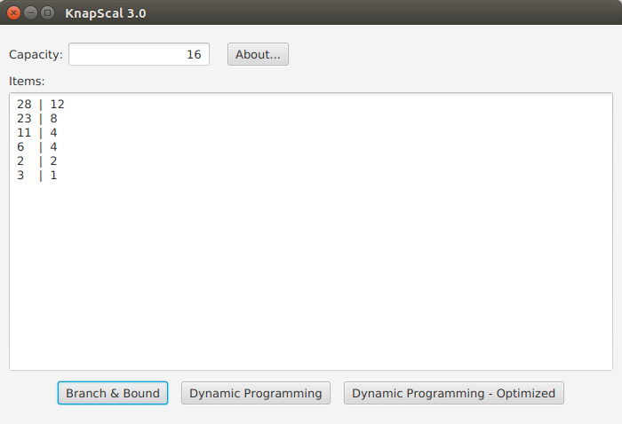
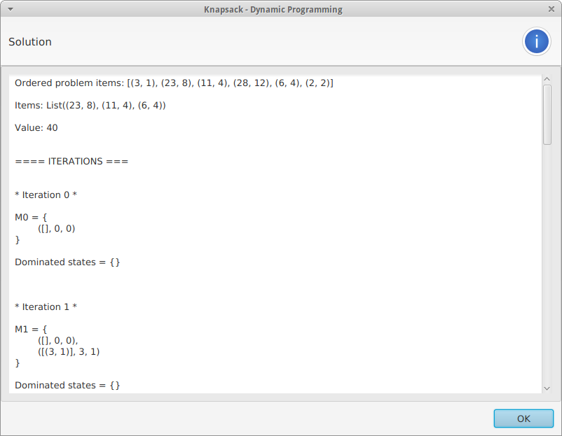
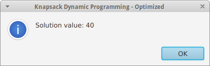

KnapScal
ScalaFX didactic application for the Knapsack problem

Introduction
KnapScal is a didactic ScalaFX application dedicated to the Knapsack problem.
It can solve an instance of the problem by employing different techniques:
-
KP01 Branch & Bound - with a few standard functions for computing the upper bound of nodes. In particular:
-
Dantzig
-
Optimized Dantzig
-
Martello-Toth
-
-
KP01 Dynamic Programming - keeping track of both active and dominated states
-
Optimized Dynamic programming - using recursive functions to compute just the value of the solution
As shown in the screenshots below, the latest version of the application employs the EighthBridge library to actually render the Knapsack tree in a Branch & Bound solution!
Requirements
KnapScal requires Java 8 Update 91 or later compatible version.
Running KnapScal
The suggested way to run KnapScal is MoonDeploy, as it will automatically download and launch the application - just click the Run with MoonDeploy button.
Otherwise, to start the application: 1. Download and decompress the binary zip archive 2. Run the file bin/KnapScal (on UNIX) or bin/KnapScal.bat (on Windows)
Branch & Bound solution
KnapScal now renders the Branch & Bound solution as a tree, just as expected.
Zooming and panning
-
To zoom in/out, use the mouse wheel
-
To pan, press CTRL and, while holding it, drag any point of the drawing
Laying out the nodes
Starting from version 3, KnapScal automatically lays out the tree nodes; however, should you notice overlapping nodes, you can drag and drop the nodes in the tree itself, to reposition them
Employing the kernel
KnapScal-core, the underlying library, can be used in other applications for the JVM.
Screenshots



Special thanks
Special thanks to Professor Silvano Martello for his valuable advice and suggestions.
Further references
-
EighthBridge - Interactive graph modeling and rendering for ScalaFX
-
Helios-core - A general-purpose utility library for Scala
-
KnapScal-core - Scala library for the Knapsack problem
-
Knapsack Problems - complete book, free to download! ^__^